المقرر كاملاً في خمس وحدات: مدخل إلى علم النبات التصنيفي، الطحالب (مدخل وتصنيف)، الفطريات والأشنات (مدخل وتصنيف)، الحزازيات والسرخسيات — محتوى منقّح للويب من وثائق المقرر الأصلية، مع الصور المجهرية ومخططات دورات الحياة بجودة عالية.
التعريف، التاريخ، أنظمة التصنيف، المراتب التصنيفية والمجموعات النباتية الكبرى — فصل واحد شامل
تنقسم الموجودات التي يحتويها هذا الكون إلى قسمين: كائنات حية (الحيوان، النبات، البكتيريا...) وكائنات غير حية (الماء، الهواء، المعادن...). وتُعتبر صفة الحياة المعيار الموحّد الفاصل بين القسمين، وهي عبارة عن كل المادة التي يتألف منها جسم الكائن الحي — أي البروتوبلازم Protoplasme — وهي مادة معقّدة التركيب، عليها تحدث التغيرات الفيزيائية والتفاعلات الكيميائية التي تنعكس على وظائف الحيوية: التنفس، الحركة، الهضم والتغذية.
وعلم التصنيف هو أحد فروع علم الأحياء، يهتم بـتوظيف الكائنات الحية في المجاميع حسب درجة تآلفها من نباتات وحيوانات وكائنات مجهرية، ويخطّط تسميتها وتقسيمها إلى مجموعات مرتّبة ومتمايزة داخله بالاعتماد على معايير تصنيفية محددة مثل الشكل، السلوك، الصفات الجينية والبييوكيميائية. ويُعتبر النوع Espèce / Specie الوحدة الأساسية في علم التصنيف، ويُعرَّف بأنه مجموعة من الكائنات الحية المتشابهة القادرة على التزاوج فيما بينها وإنتاج أفراد جديدة خصبة.
وقد وضع ليني Linné التسمية الثنائية لكل الكائنات الحية: لكل نوع اسم لاتيني مكوّن من مقطعين (اسم الجنس ثم النوع)، وهو ما يُعرف بـالاسم العلمي Nom scientifique المستعمل في كل أنحاء العالم تفادياً لاختلاف الأسماء المحلية.
| النظام | الأساس | الممالك |
|---|---|---|
| الثنائي | الأقدم: تقسيم تقليدي | مملكتان: النباتية والحيوانية |
| الثلاثي Hogg & Haeckel (1861–1866) | إضافة المجهر الضوئي ودراسة العالم المجهري | 3 ممالك: النباتات، الحيوان، الأوليات |
| الرباعي (نظام كوبلاند Copeland) | الفصل بين حقيقيات النواة وبدائياتها (وجود النواة أو غيابها) مع إضافة مملكة مستقلة للبدائيات | 4 ممالك: النباتات، الحيوان، الأوليات، البدائيات |
| الخماسي (نظام ويتكر Whittaker 1969) | فصل الفطريات من المملكة النباتية: جدرها من كيتين Chitine وليست ذاتية التغذية، عكس النباتات (سيليلوز + تركيب ضوئي) | 5 ممالك: النباتات، الحيوان، الفطريات، الأوليات، البدائيات |
ويُعتبر نظام ويتكر الأكثر شمولاً وقبولاً، وقد غيّرت تبعاً له عدة تصنيفات اعتمدت معايير أدقّ وأعمق.
كان الإنسان في الأزمنة القديمة يجمع النباتات البرّية ويصطادها ويتعرّف على خصائصها لغرض الاستعمال، أما الدراسة العلمية فلم تكن قد تبلورت بعد. ومع الحاجة الغذائية والصحّية للنباتات خاصة بعد استقرار الإنسان وظهور الزراعة، تطوّرت المعرفة النباتية عبر أربعة عصور كبرى:
ترتّب المراتب التصنيفية من الأوسع (المملكة) إلى الأضيق (النوع ثم الصنف)، وكل مرتبة تضم مرتبة أدنى منها. مثال نبات القمح الصلب:
| المرتبة | المثال |
|---|---|
| المملكة Règne | Plantae |
| الشُّعبة Embranchement | Liliophyta (النباتات البذرية الزهرية) |
| تحت الشعبة | Angiospermes — مغطاة البذور |
| الصنف Classe | Monocotylédones — أحادية الفلقة |
| تحت الصنف | Commelinidae |
| الرتبة Ordre | Poales |
| العائلة Famille | Poaceae — النجيلية |
| تحت العائلة | Poaideae |
| الجنس Genre | Triticum — الحنطة |
| النوع Espèce | Triticum durum L. — القمح الصلب |
| الصنف الزراعي Variété | بليوني Belyouni |
ويرتبط علم التصنيف النباتي بالعديد من فروع علم النبات الأخرى: علم التشريح الظاهري Morphologie، علم التشريح والتركيب Anatomie، علم البيئة النباتية Écologie végétale، وعلم الخلية والوراثة Génétique.
تتميّز بين المراتب التصنيفية بلاحقة الاسم الموحّدة في كل مرتبة، وفق المدعو De Rivières (2002):
| المرتبة | الطحالب | الفطريات | النباتات البذرية |
|---|---|---|---|
| الشُّعبة Embranchement | -phyta | -mycota | -phyta |
| الصنف Classe | -phyceae | -mycètes | -opsida |
| تحت الصنف | -phycidae | -mycétidae | -idae |
| العائلة Famille | -aceae عند الجميع | ||
مثال: الجنس وردة Rosa — بإضافة اللاحقة -aceae نحصل على العائلة Rosaceae، وبإضافة -ales نحصل على الرتبة Rosales التي تنتمي إلى صنف ثنائيات الفلقة Magnoliopsidae المنحدرة من شعبة النباتات البذرية Magnoliophyta المنتمية بدورها إلى المملكة النباتية Plantae.
يعود انتماء أي كائن إلى المملكة النباتية إلى تحقّق الشروط الأساسية فيه:
وتضم المملكة النباتية نباتات متفاوتة في الأحجام، من الطحالب المجهرية إلى الأشجار المعمّرة. أما الفطريات فقد أُبعدت حديثاً من المملكة النباتية ورُفعت إلى مملكة مستقلة، لأن جدرها الخلوية من كيتين (مثل الحشرات) وليست ذاتية التغذية.
| الوجه | المرشِّيات Thallophytes | الكورمِّيات Cormophytes |
|---|---|---|
| التركيب | جسم مرشة Thalle بأشكال مختلفة (خيطية، شريطية، كروية...) دون تمييز جذر/ساق/ورق | نباتات مركّبة بأنسجة متمايزة (جذر، ساق، أوراق حقيقية أو أشباهها) |
| النواة | بدائية التنظيم الخلوي، متجمعة | حقيقية النواة، متعددة الخلايا المتمايزة |
| التكاثر | بالأبواغ les spores أو التكاثر الجنسي بالأمشاج | أعضاء تكاثرية متمايزة (مشيجية/بوغية) |
| الأمثلة | الطحالب، الفطريات، الأشنات | الحزازيات، السرخسيات، النباتات البذرية |
فصلان: مدخل عام (المميزات، المورفولوجيا، الخلوية، التكاثر والدورات) ثم التصنيف التفصيلي للأقسام
تُعرَّف الطحالب على أنها مجموعة من الكائنات الحية ذاتية التغذية، ويسمّى العلم الذي يدرس شمول الطحالب بـعلم الطحالب Phycologie. ويعود ظهورها إلى العصور الأولى لبداية الحياة على سطح الكرة الأرضية (حوالي 1.3 مليار سنة). وتُعتبر الطحالب الخضراء المزركّة Les Cyanobactéries (بدائية النواة) من أقدم أنواع الطحالب التي تمت دراستها في العالم السابق.
يمكن تعريف الطحالب أيضاً بأنها كائنات بدائية متعددة الأشكال، تفتقر الأنسجة الأوعائية، تحتوي على عدة أنواع من الصبغات أهمها الكلوروفيل (أ) الذي يُعتبر صبغة أساسية، ولها حراكية تكاثرية متنوعة. وتتوزع الطحالب على الممالك الثلاث: الخضراء المزركة بدائية النواة، وحيدة الخلية تنتمي إلى مملكة الأوليات، أما الطحالب المركبة (مرشيات) فتنتمي إلى المملكة النباتية.
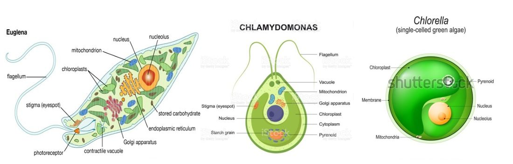
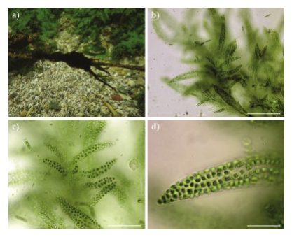
تتنوع الطحالب في أشكالها وأحجامها، وتوجد في عدة تجليات مورفولوجية رئيسية:
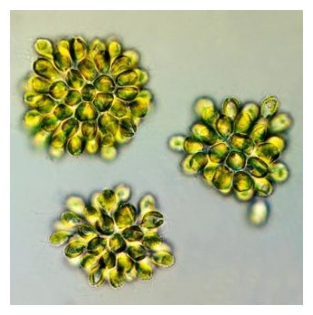
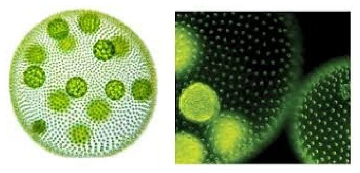
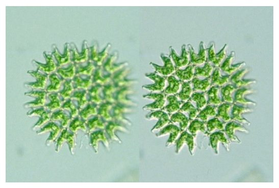
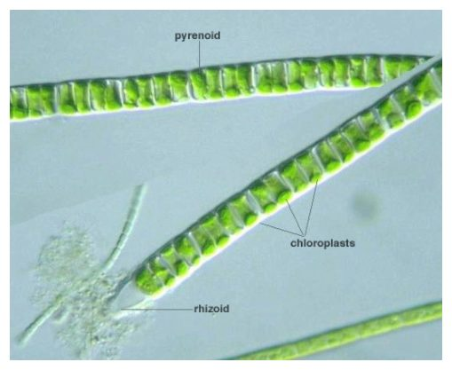
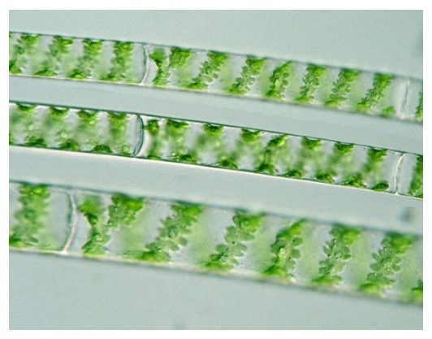
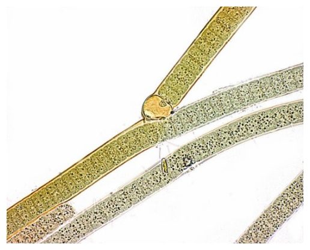
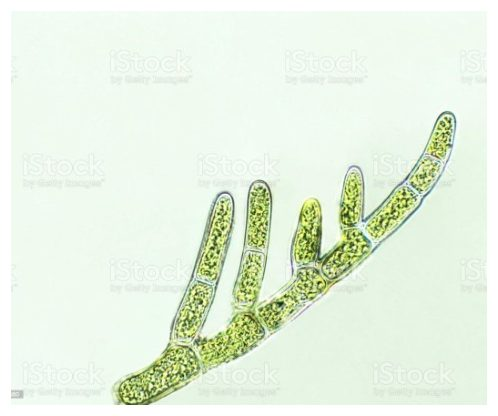
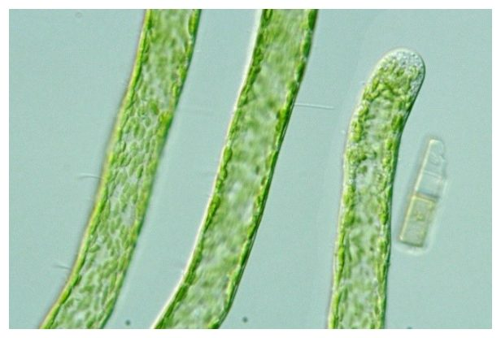
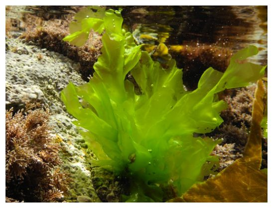
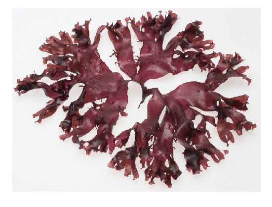
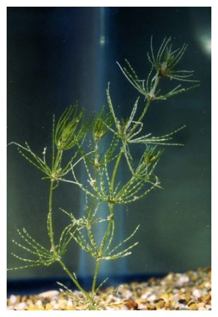
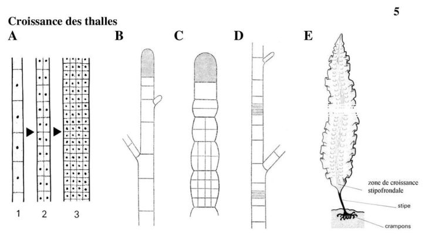
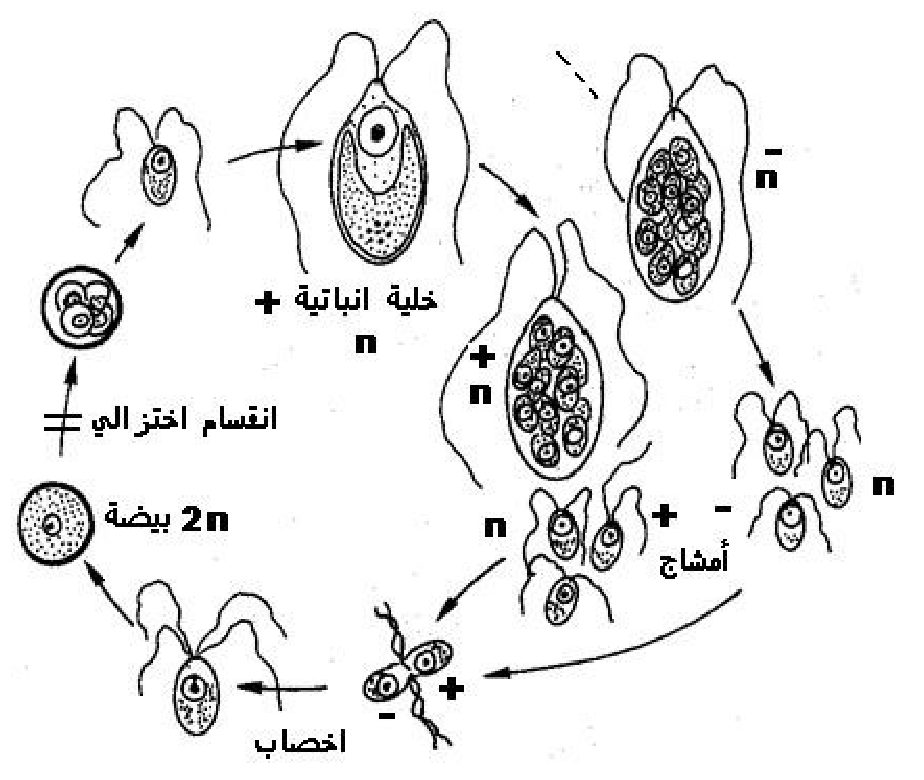
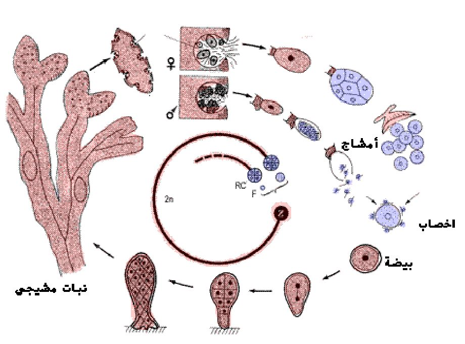
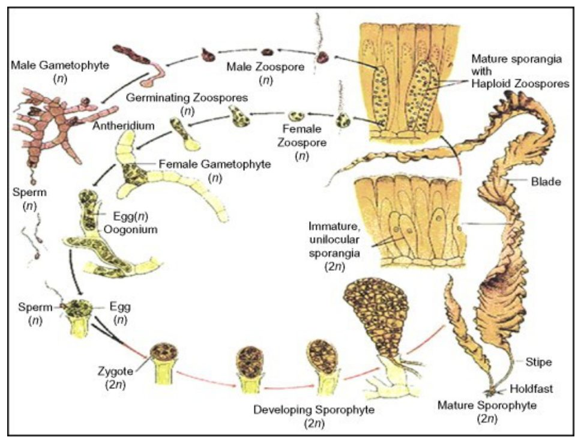
قبل التعرّف لنظام تصنيف الطحالب يجب أن نعلم أنه في سنة 1969 أسّس ويتكر نظام التصنيف الخماسي للكائنات الحية بخمس ممالك. وحسب شكل المرشة، تتوزع الطحالب بين ثلاث ممالك: بدائيات النواة، الأوليات والنباتية. ومن أجل دراسة أنواعها بدقة اعتُمدت ستة معايير تصنيفية:
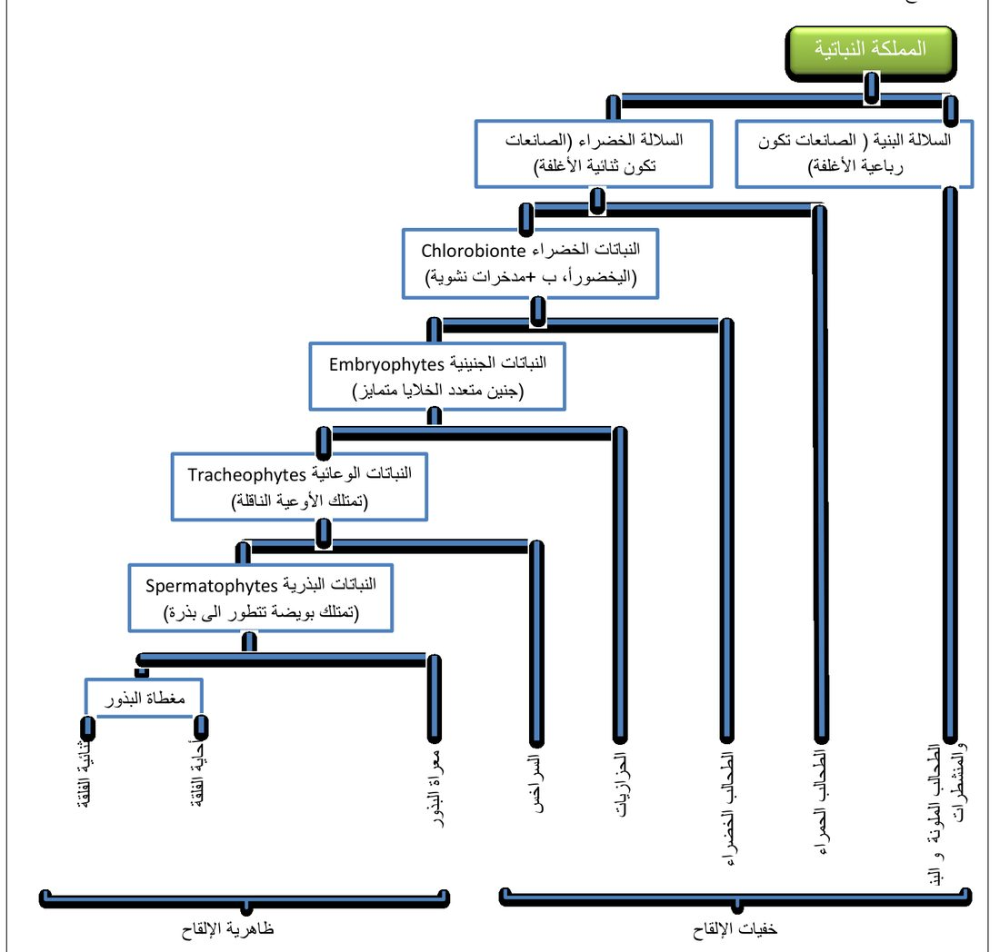
وعلى هذا الأساس تتوزع الطحالب على ثلاث ممالك: مملكة البدائيات Monera (قسم الطحالب الخضراء المزركة Cyanobactéries — دُرست في السنة الأولى سابقاً)، ومملكة الأوليات Protista التي تضم الأقسام التالية موضوع هذا الفصل.
الخصائص العامة: تتواجد في الأوساط المائية (عذبة ومالحة) وبعضها يعيش في التربة الرطبة أو على الصخور وجذوع الأشجار؛ شبيهة بالنباتات الراقية إذ تحتوي خلاياها على نواة حقيقية وصبغات ضوئية (كلوروفيل a وb، كاروتينات وزانثوفيلات) متممركزة في الصانعات الخضراء؛ الغذاء المدخّر نشا والسيليلوز مكوّن أساسي للجدار؛ تتنوع في الشكل (وحيدة الخلية، مستعمرات، خيوط متفرعة وغير متفرعة) وتتكاثر خضرياً وجنسياً ولاجنسياً.
تضم طائفتين: Charophyceae وChlorophyceae هذه الأخيرة تقسم إلى ثماني رتب:
| الرتبة | أبرز خصائصها | أمثلة |
|---|---|---|
| Volvocales | مياه عذبة؛ أفراد وحيدة الخلية أو مستعمرات متحركة بالأسواط؛ تكاثر جنسي ولاجنسي — عائلتان: وحيدة الخلية Chlamydomonaceae والمستعمرات Volvocaceae | Chlamydomonas (سوطان أماميان لكل خلية)، Volvox (مستعمرة كروية بعدد هائل من الخلايا تتصل بروابط سيتوبلازمية)، Eudorina, Gonium, Pandorina |
| Chlorococcales | مياه عذبة؛ غير متحركة (لا أسواط ولا أهداب) والحركة فقط في الأبواغ المتحركة؛ تحت رتبتين: Zoosporinae (تكاثر بالأبواغ المتحركة) وAutosporinae (بالأبواغ الذاتية فقط) | Chlorococcum (خلايا مستديرة صغيرة وحيدة النواة)، Chlorella (وحيد الخلية كروي، صانعة فنجانية، تكاثر ذاتي) |
| Oedogoniales | مياه عذبة؛ تتثبت بالقاعدة بخيوط قاعدية؛ خيوط بسيطة أو متفرعة من خلايا أسطوانية وحيدة النواة بصانعة شريطية | Oedogonium |
| Ulothricales | خيوط طحلبية متفرعة أو غير متفرعة، تتثبت بالقاعدة؛ صانعة خضراء شريطية | Ulothrix |
| Chaetophorales | عذبة ومالحة؛ خيوط متفرعة تنتهي بشعيرات؛ قسم زاحف وقسم قائم مع كاذبات جذرية مغطاة بغلاف مخاطي | Stigeoclonium |
| Cladophorales | خيوط متفرعة بخلايا أسطوانية متعددة النوى (مدمج جزئي) وجدر سميكة؛ تجمعات معوّقة تتثبت بأشباه جذور؛ مياه عذبة غالباً | Cladophora (أشهر أجناسها) |
| Conjugales — المزاوجات | مياه عذبة راكدة؛ وحيدة أو متعددة الخلايا خيطية؛ التكاثر الجنسي بالاقتران (قناة اقتران بين خليتين، أمشاج غير متحركة) — ومنه اشتق الاسم؛ الصانعات نجمية عند Zygnema ولولبية عند Spirogyra | Spirogyra، Zygnema (عائلة Zygnemataceae) |
| Siphonales — الأنبويات | بحرية غالباً استوائية؛ أجسام خيطية وأنبوبية مدمجة خلوية متعددة النوى؛ صانعات عديدة الشكل الشبكي؛ تكاثر جنسي من نوع متشابه الأمشاج | Siphonocladus |
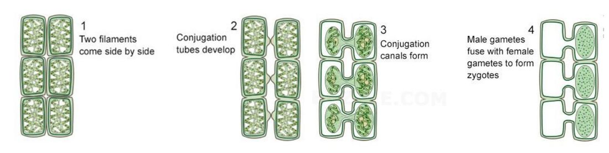
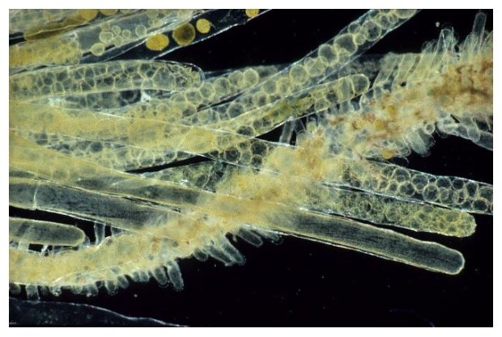
تعيش في المياه العذبة والمالحة، وهي طحالب متمايزة الحجم يمكن رؤيتها بالعين المجردة. تختلف عن الخضر بتميّزها شكلياً وتشريحياً: محور مركزي رفيع طويل أخضر اللون يتكون من عقد وسلاميات، والمحور متفرع تنشأ عند كل عقدة فروع جانبية، ويثبت نفسه في الوسط بأشباه جذور متعددة الخلايا. أعضاء التكاثر مبثوثة خضر اللون حول الفروع، والتكاثر جنسي بالأمشاج وتوجد مرحلة خيطية (برتوهالم/الطور الخيطي) في دورة الحياة — ولهذه الخصائص وُضعت في مجموعة مستقلة مع تشابه وثيق بالخضراء (أحادية الصيغة، الكلوروفيل سائد يعطي اللون الأخضر، النشا مادة مدخرة). الرتبة: Charales — العائلة: Characeae — أشهر أجناسها: Chara.
رتبة Euglenales — جنس Euglena: طحلبة خضراء وحيدة الخلية مغزلية الشكل، توجد في البرك والمستنقعات؛ لا تحتوي جداراً بل يحيط بالخلية غلاف جيلاتيني؛ سوطان غير متساويين في الطول (وهي من أبرز مميزاتها)؛ تتكاثر خضرياً ولاجنسياً (أبواغ متحركة وغير متحركة)، وفي الظروف غير الملائمة تتحوصل بغلاف سميك ثم تنقسم وحدات متشابهة عند التحسّن. ورتبة Vaucheriales (عائلتا Botrydiaceae وVaucheraceae): جنس Vaucheria بخيوط خضراء معفرة متفرعة غير مقسمة، جدار بطبقتين (بكتينية خارجية وسيليلوزية داخلية)، فجوة عصارية كبيرة، غذاء مدخّر على شكل زيوت.
تسمّى أيضاً المنشطرات أو الطحالب الذهبية. عائلة واحدة Bacillariophyceae: عذبة ومالحة وتربة رطبة، طافية أو متثبتة؛ معظمها وحيد الخلية وقد يتجمع في مستعمرات؛ دقيقة الأشكال جميلة متناظرة؛ الخلايا بصانعة أو اثنتين تضمان الفوكسوزانتين والكاروتينات والكلوروفيل (a, c)؛ المواد المدخرة زيوت دهنية؛ والميزة الفاصلة: جدار خلوي بكتيني مشبَّع بالسليكا يبقى أحفوراً بعد موت الطحلبة؛ التكاثر خضري (انقسام) وجنسي.
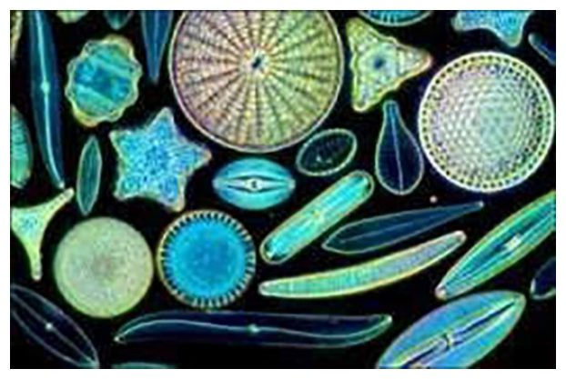
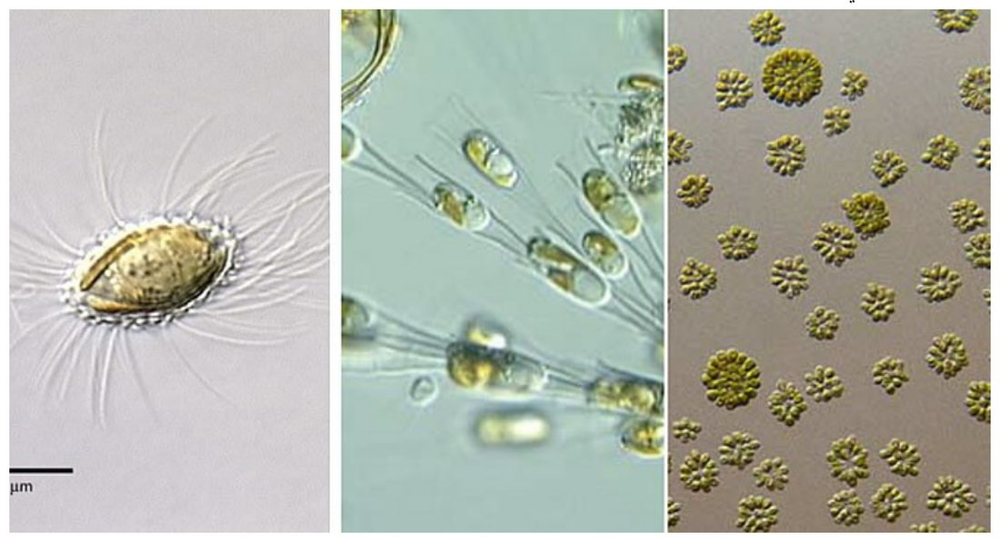
تنقسم الحمراء إلى تحت صنفين: البدائية Bangioideae (وحيدة الخلية أو خيوط بسيطة؛ النمو شامل غير قمّي؛ صانعة واحدة محورية نجمية في الخلية؛ أبواغ من انقسام مباشر) والمتقدمة Florideae (مجمعات خيطية على هيئة رقائقات؛ نمو قمّي؛ عدة صانعات جدارية؛ الأبواغ تنشأ بطريقة غير مباشرة).
رتبة Bangiales — عائلة Bangiaceae — جنس Porphyra: طحلبة بحرية تنمو مثبتة على الصخور أو طفيلية على نباتات أخرى؛ الثالوس من أجزاء ورقية رقيقة مغطاة بمادة جيلاتينية (صف واحد أو صفّان من الخلايا)؛ الخلايا الخضرية متقاربة مضغوطة بجدر رقيقة بكتينية وفي الجزء الداخلي حامل صبغي (كلوروبلاست) والنواة صغيرة مركزية. تكاثرها: لاجنسي بأبواغ أحادية تتشكل داخل الخلايا الخضرية العادية فتنمو طحلبة جديدة عند تحررها؛ وجنسي: تُنتج الأمشاج الذكرية غير المتحركة Spermaties من الخلايا الذكرية، والعضو الأنثوي بويضة كروية بثغرة استقبال طرفية؛ عند الوصول يمر المشيج الذكري عبر قناة الثغرة وتتم الإلقاحة (بويضة ملقحة) التي تنقسم عدة انقسامات أولها اختزالي منتجة **حرازيم مثمرة** carpospores — كل واحدة تنمو لتعطي طحلبة جديدة.
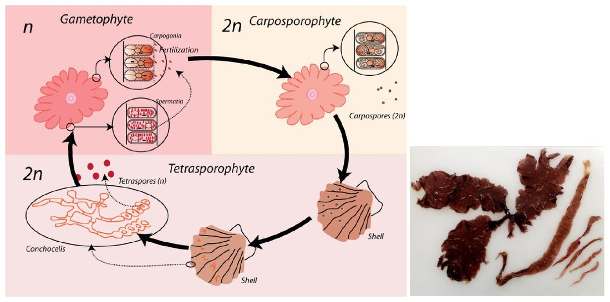
تُصنف حسب دورات الحياة إلى ثلاث مجموعات:
| المجموعة | الميزة | المثال |
|---|---|---|
| متشابهة الأجيال Isogeneratae | طوران متعاقدان ومتشابهان ظاهرياً | رتبة Ectocarpales — جنس Ectocarpus: البحر الأبيض المتوسط والمياه الباردة؛ خيوط رقيقة متفرعة؛ دورة بسيادة جنسية: أبواغ سائبة أحادية وثنائية، حوافظ مشيجية تنتج أمشاجاً متشابهة أو غير متشابهة، تندمج في لاقحة Zygote تعطي طوراً بوغياً جديداً — الطوران متشابهان ظاهرياً |
| مختلفة الأجيال Heterogeneratae | طوران غير متشابهين ظاهرياً ووراثياً | رتبة Laminariales — جنس Laminaria: كبير الحجم (حتى ~2م وبعض الأنواع ~5م) من ثلاثة أجزاء: مثبت/ماسك قاعدي، عنق ساقي صلب، ونصل ورقي متفرع؛ تركيب داخلي بطبقات (مريستم، خلايا هلامية غنية بحاملات اللون، لب داخلي بخلايا تصنع خيوطاً غذائية كثيفة)؛ دورة بسيادة البوغي الضخم (2n) على مشيجي صغير (n) — أعضاء ذكرية (أنتريدات) وأنثوية (أرجونات) والبويضة تبقى متصلة بالنبات (Zygote) |
| دائرية الأبواغ Cyclosparae | لا ظاهرة تبادل أجيال؛ الثالوس (2n) طوال الدورة — رتبة واحدة Fucales | جنس Fucus: مناطق المد والجزر؛ يفرز مادة هلامية تحميه من الجفاف؛ الثالوس: ماسك قرصي لاصق، عنق أسطواني يشبه الساق، نصل شريط عريض مسطح متفرع بعروق وسطية؛ التكاثر لاجنسي وجنسي: الأنتريدات والأرجونات داخل حوافظ جنسية، البويضات تنفصل لماء البحر (إلقاح خارجي) والتكاثر تبيّضي Oogamie |
فصلان: مدخل عام (البنية، التغذية، التكاثر) ثم التصنيف الكامل مع الأشنات
تُعتبر الفطريات من أقدم الكائنات حقيقية النواة، إذ عُثر على حفريات لها يعود عمرها إلى 410 مليون سنة. وبسبب خصائصها الفريدة — خاصة احتواء جدر خلاياها على الكيتين — فُصِلت من المملكة النباتية (حيث كانت تصنّف مع الطحالب والأشنات ضمن الخلاسيات أي كائنات المرشة Thallus الأرضية التي تتغذى امتصاصاً ولا تتمايز إلى أجزاء) وذلك منذ العصر الحديث، ليضعها ويتكر سنة 1969 في مملكة مستقلة.
والفطريات مجموعة واسعة الانتشار (تربة، ماء، هواء): تختلف عن النباتات بافتقارها اليخضور فلا تستطيع تركيب غذائها (غير ذاتية التغذية)، وتختلف عن الحيوانات بطريقة تغذيتها: لا تبتلع الغذاء بل تمتصّ المواد الغذائية الجاهزة. وبفضل انتشارها الواسع وقدرتها على تحويل المواد العضوية الميتة تلعب دوراً رئيسياً في السلاسل الغذائية باعتبارها محلّلات Décomposeurs، إضافة إلى أهميتها الاقتصادية في مجالات الزراعة والصناعة.
لغياب الصانعات (الكلوروفيل) فهي غير ذاتية التغذية: تكون إما متطفلة أو مترممة أو متكافئة، لقدرتها على إفراز إنزيمات خارجية تعمل على تحويل المواد العضوية الموجودة في الوسط الذي تعيش فيه وتفكيكها فتجعلها قابلة للامتصاص. وتنقسم حسب نمط التغذية إلى:
تستطيع الفطريات التكاثر بعدة طرق مائزتها قدرتها الكبيرة على الانتشار والبقاء: تتكاثر بالطريقتين اللاجنسية والجنسية مع التكيفات المناسبة.
أ/ التكاثر اللاجنسي La reproduction asexuée — وهو الأكثر شيوعاً، يتكرر أكثر من مرة خلال موسم التكاثر، بعكس الجنسي الذي يحدث مرة واحدة في نهاية دورة الحياة. طرقه:
ب/ التكاثر الجنسي: غالبية الفطريات تتكاثر جنسياً باستثناء الفطريات الناقصة Deuteromycètes (التي يغيب عندها الطور الجنسي) — ويتضمن ثلاث مراحل مميزة:
تنقسم مملكة الفطريات إلى قسمين: الفطريات الهلامية (اللزجة/المخاطية) Myxomycètes، والفطريات الحقيقية Eumycètes.
فطر Physarum: متواجد في المناطق الحارة وأوراق الأشجار في الغابات الرطبة؛ يتغذى على البكتيريا وأبواغ الفطريات (بلعمة) ويمتص المحاليل؛ الإخراج Exocytose بحركة انقباضية كما عند الحيوان. تكاثره: تتزاوج خليتان (ذكرية وأنثوية) فيتكوّن زيجوت يفقد أسواطه بعد فترة ويصبح أميبي الشكل وتكبر خلاياه وتنقسم نواته انقسامات غير مباشرة فيتكوّن بلازموديوم متعدد الأنوية الثنائية؛ وبعد فترة ينمو جسم ثمري يُعرَف بالثمرة البوغية Sporange يُحمل على حامل؛ وعند اكتمالها تنقسم الأنوية الموجودة فيها انقساماً اختزالياً ثم تحاط بجدار سميك متحولة إلى أبواغ أحادية، تنمو لتعطي دورة حياة جديدة.
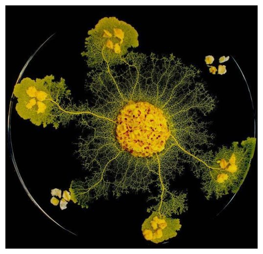
يضم هذا القسم الغالبية العظمى من الفطريات (أغلبها خيطية)، وينقسم إلى 5 صفوف:
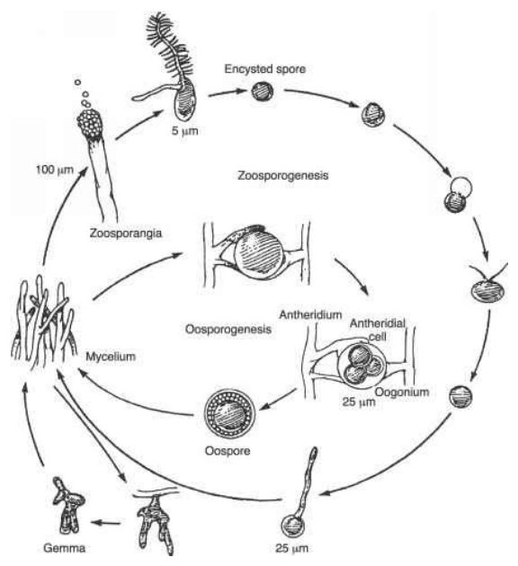
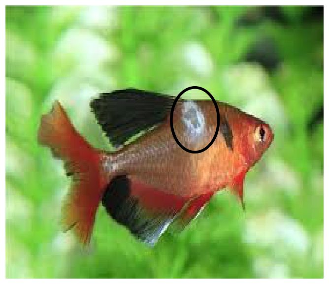
وأشهرها عفن الخبز Rhizopus (رتبة Mucorales): يتميّز بوجود خيطين مختلفين (خيط + وخيط −)؛ يبدأ التكاثر الجنسي باقتراب الخيطين وإفراز هرمونات متبادلة، فتتشكل حافظتان مشيجيتان (السالبة والموجبة) تندمجان مكوّنتين بويضة ملقحة Zygote تفرز جداراً سميكاً يحيط بها متحولة إلى لحمة بوغية Zygospore؛ وعند عودة الظروف الملائمة تنبت معطية حاملاً حافظياً يحمل في نهايته حافظة بوغية — وتعاد دورة الحياة.
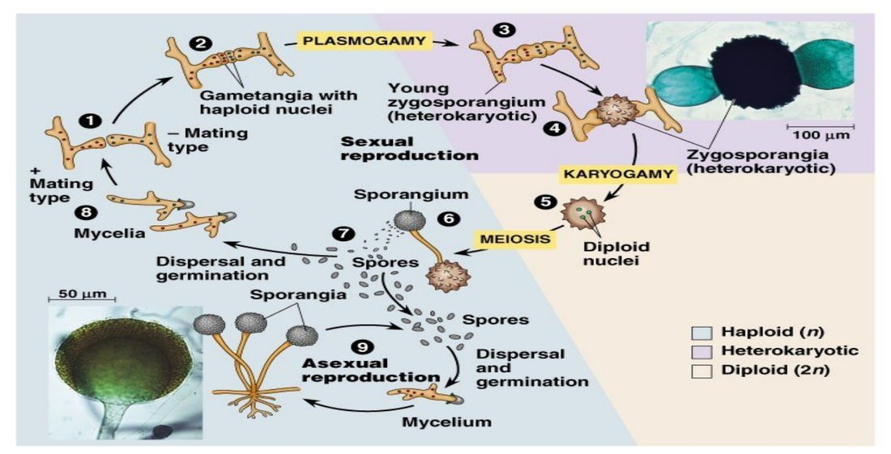
تنقسم حسب طريقة تشكل الثمرة إلى: كيسية أولية (تتكون الثمرة انطلاقاً من الخلية نفسها كما عند الخميرة) وكيسية حقيقية (تتكون الثمرة ثمرة كيسية متخصصة).
فطر البنيسليوم Penicillium: يعيش معيشة رمّية على الفواكه المتعفنة (خاصة الليمون والبرتقال)؛ ارتبط اسمه بالمضاد الحيوي Pénicilline؛ يتكاثر لاجنسياً: خيوط رقيقة عديمة اللون مقسمة بحواجز تنتشر على الوسط الغذائي وتتفرع إلى حوامل كونيدية مقسّمة بحواجز، تفرعات أولية وثنائية تنتج حوامل كونيدية على شكل مكنسة — وهو الشكل المميز للفطر؛ أهميته الصناعية: Penicillium roqueforti في إنتاج الجبن الأزرق (إفراز أحماض دهنية تعطي اللون والطعم) وPenicillium natatum في إنتاج البنسلين (أول المضادات الحيوية).
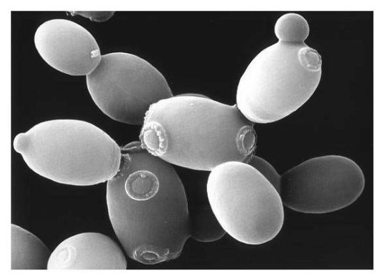
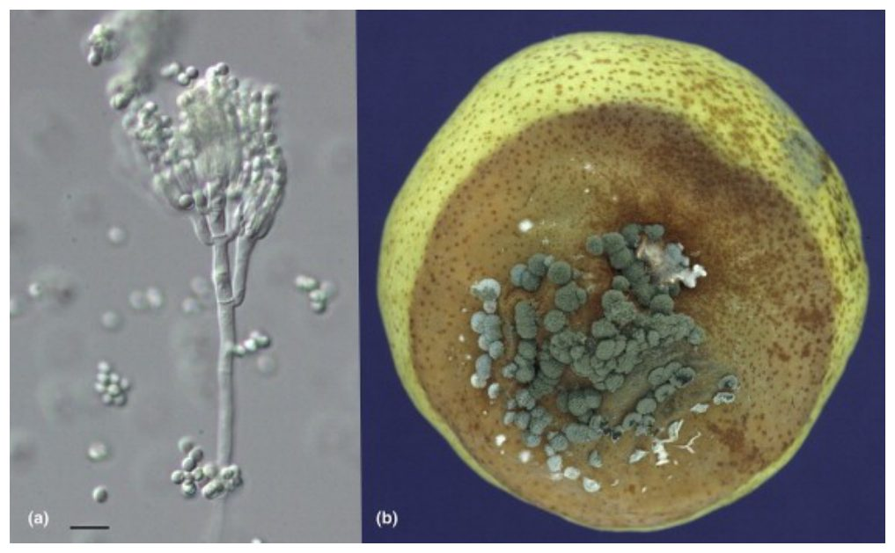
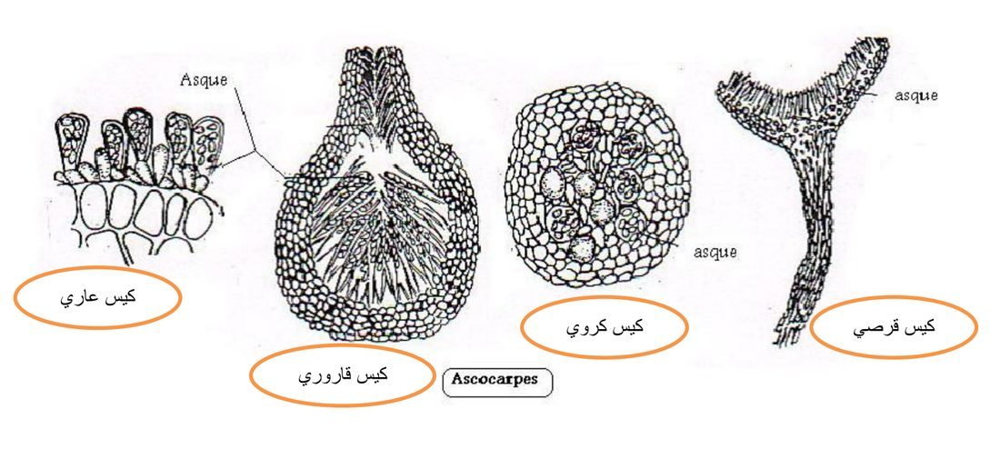
تحت صفوفها: Phragmobasidomycètes (الحوامل تقسم خلاياها المشكلة للرباعيات البوغية وتنفصل فكل خلية تعطي بوغاً — أربع رتب أهمها Ustilaginales: فطر Puccinia graminis المسبب لمرض صدأ القمح، بدورة حياة طويلة بخمسة أنواع من الأبواغ على عائلين: أبواغ بيكنية Pycniospores ← أسيدية ← يوريدية Urédospores على القمح ← تيلية Téleutospores ← حوامل بازيدية ← أبواغ بازيدية) وHolobasidomycètes (حوامل كاملة غير مقسمة + مِبعة carpophore كبيرة معروفة رمّية أو متكافئة غالباً — ~16000 نوع، 6 رتب أهمها Agaricales).
دورة حياة فطر عيش الغراب Agaricus (رتبة Agaricales): الخيوط الفطرية في المنطقة الخصبة وكل خيط يحتوي نواتين غير متحدتين ← اقتران نووي فتتكوّن هيفة بخلايا ثنائية النواة ← انقسام ميوزي أول (نواتان) ثم ثانٍ (أربع أنوية أحادية الصيغة) ← الخلية منتفخة تتحول إلى Baside بطرفها أربعة نتوءات تهاجر إليها الأنوية مكوّنة أربع أبواغ بازيدية تنفصل ← الأبواغ في وسط مناسب تنبت معطية غزالاً فطرياً جديداً أحادي النواة (سلالة + أو −) ← إذا التقى خيطان من سلالتين مختلفتين تم الاقتران البلازمي — وتعاد الدورة.
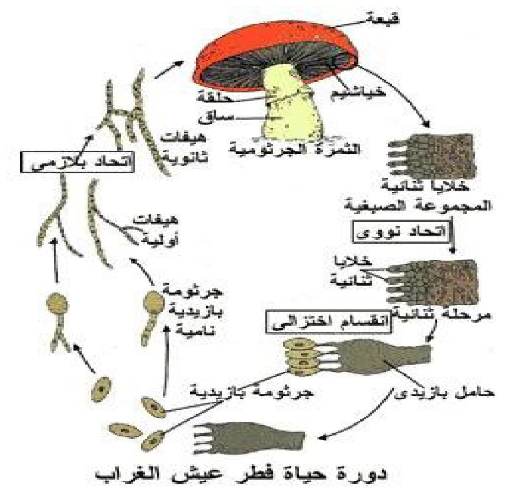
1. التعريف: كائنات مركّبة تنتج عن اتحاد دائم وثابت قادر على التكاثر (تكافل/تعايش Symbiose) بين طحلب ذاتي التغذية وفطر غير ذاتي التغذية: الطحلب يركّب الغلوسيدات بالتركيب الضوئي، والفطر يؤمّن الماء والأملاح المعدنية ويضمن الحماية. الفطر غالباً من الكيسية ونادراً من الوعائية، والطحلب من رتبة Nostocales (الخضراء المزركة ~10%) أو الطحالب الخضراء chlorococcales (~85%).
2. المظهر والتركيب: خلايا الطحلب متفرعة ومتفرقة، والفطر على شكل هيفات؛ الجهاز الخضري مرشة Thalle بنوعين: جيلاتينية (خيوط الفطر داخل الكتلة الهلامية للطحلب مثل Nostoc — سوداء جافة، تنتفخ بالماء) وجافة (الأكثر انتشاراً؛ خلايا الطحلب محصورة بين خيوط الفطر)، وللجافة أشكال: قشرية Crustacés (قشرة صلبة ملتصقة شديداً بالحامل: صخرة، جذع...)، ورقية Foliacés (شكل ورقي قليل أو كثير التفرع يتصل بأشباه جذور وينفصل بسهولة)، شجيرية Fruticuleux (تشبه شجيرة مثبتة بدعامة ذات قاعدة ضخمة)، وشكل معقد (ورقية ملتصقة + أخرى قائمة متفرعة فوقها).
3. البنية التشريحية: المرشة شبكات هيفات فطرية بينها تجمعات خلايا طحلبية (Gonidies) — وحسب توزعها: مرشة متجانسة (هيفات وتجمعات طحلبية موزعة بانتظام على كامل الجسم — جنس Comella بخلايا Nostoc على الوجهين) أو غير متجانسة بطبقات من الأعلى للأسفل: قشرة علوية cortex supérieur (هيفات متشابكة كثيفة واقية) ← طبقة طحلبية couche gonidies (الخلايا الطحلبية محاطة ببعض الهيفات) ← النخاع médulle (هيفات الفطر فقط) ← قشرة سفلية cortex inférieur (هيفات للتثبيت بأشباه الجذور Rhizoïdes).
4. التكاثر: جنسي مضمون بالجزء الفطري (شكلان من الأكياس: مغلقة كبروزات سطحية أو مفتوحة كفتحات متعرجة في جسم المرشة — تُنتج بعد الانقسام أبواغاً كيسية Ascospores)، ولاجنسي بمشاركة الطحلب عبر التجزؤ Fragmentation (انفصال أجزاء من المرشة) بمساعدة أعضاء خاصة.
5. أهمية الأشنات: غذاء للكثير من حيوانات التربة • مادة عضوية عند موتها في التربة الزراعية • غذاء للحيوانات خاصة شتاء • يُطحَن ويُصنع منه دقيق للخبز • تُستخرج منها أصبغة، وزيوت عطرية للتجميل، وبعض المضادات الحيوية • مؤشر جيد للتلوث (حساسيتها العالية للهواء الملوث).
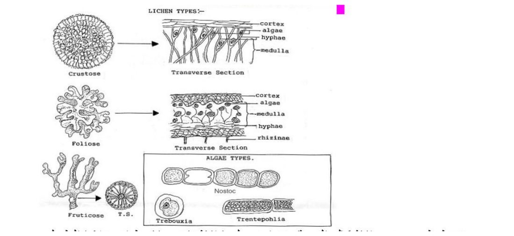
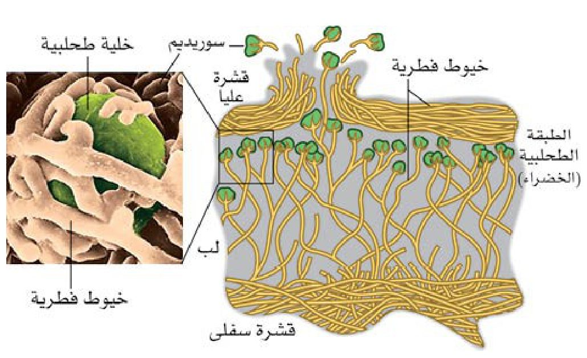
الأرشيجونيات: خصائص الجنينيات ثم الحزازيات بأصنافها الثلاثة (كبدية، خُلمية، قرنية) ودوراتها المصوّرة
النباتات الجنينية Embryophytes نباتات أرضية تمتاز بوجود جهاز تكاثري متعدد الخلايا: تصل البويضة بعد عملية الإلقاح داخل عضو يسمى الأرشيجون Archégone (ومنه اشتق الاسم Archégoniates — الأرشيجونيات)، وتتطور البويضة الملقحة إلى جنين Embryon — ومنه الاسم الثاني جنينيات.
تمتاز هذه النباتات بعدة خصائص:
تضم الجنينيات: الحزازيات Bryophytes (~25000 نوع)، السرخسيات Ptéridophytes (~12000 نوع)، والنباتات البذرية Spermaphytes (أكثر من 250000 نوع).
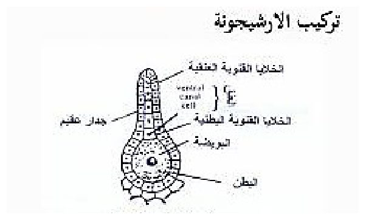
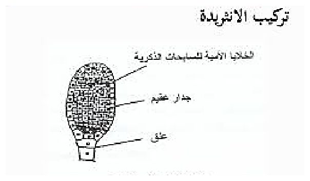
الجهاز الخضري قد يكون صبو ساق مورّق أو مرشة، محميّ الوجه السفلي مسطحاً ملاصقاً للوسط (رطب، مضلل)، يتشكل من امتدادات خلوية وحيدة الخلية تمثل أشباه الجذور مع حراشف بنية أو محمرة اللون. ينتشر في الأماكن الرطبة المضللة، ويضم حوالي 800 جنس ونحو 20000 نوع — أجسامها مشبعة اللون منبطحة وكأنها تشبه الكبد (ومنه اشتق اسمها: الكبديات Hépatiques). تمثل المرشة الطور المشيجي السائد، ويعيش الطور البوغي متطفلاً على المشيجي الأنثوي بعد الإلقاح، ويتكون من ثلاثة أجزاء: القدم، الحامل والكوبة (جدار الكوبة من صف واحد أو عدة صفوف من الخلايا وخالٍ من الثغور).
تضم خمس رتب: Metzgeriales, Calobryales, Jungermanniales, Sphaerocarpales وMarchantiales هذه الأخيرة الأهم وتضم أهم عائلة Marchantiaceae.
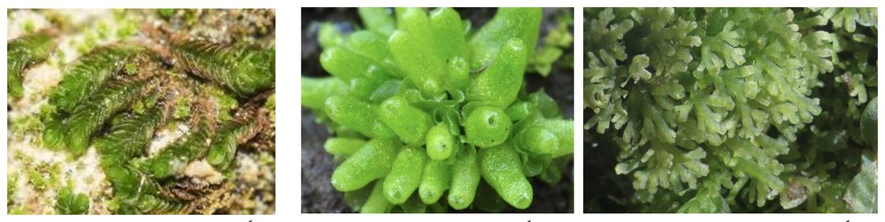
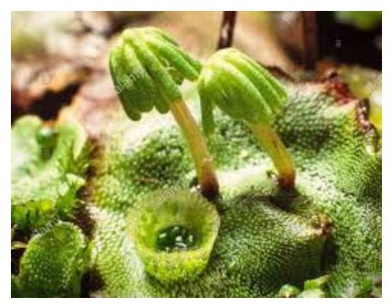
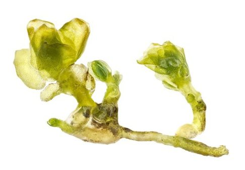
النبات مرشة منبطحة تعيش الأماكن الرطبة؛ تحتوي الجهة العلوية على أشباه الجذور (الامتدادات خلوية) بالإضافة إلى الحراشف، ويتفرع جسم النبات تفرعاً ثنائي الشعبة، ويوجد ما يشبه البرق الموسّعي (العصّ الأوسطي) يبرز كوّال إلى المنطقة السفلية. تتكون المرشة من ثلاث طبقات من الخلايا:
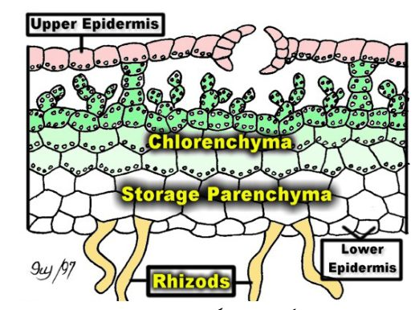
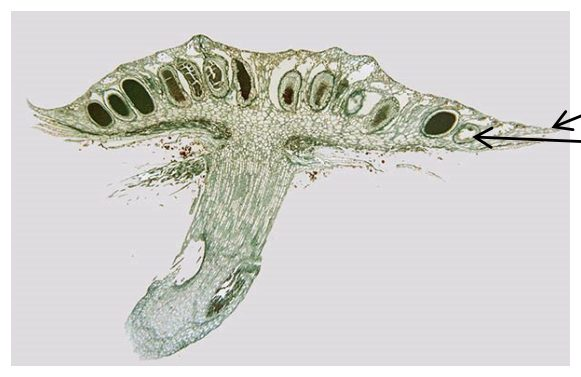
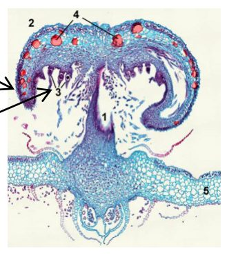
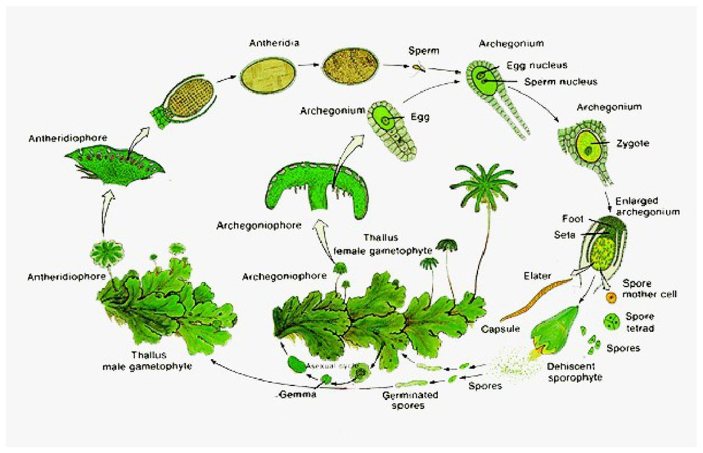
يحتوي هذا الصف على حوالي 800 جنس بأزيد من 14000 نوع. تمتاز بوجود أشباه جذور وسيقان وأوراق منتظمة في شكل حلزوني؛ يعيش الطور البوغي متطفلاً جزئياً على المشيجي الأنثوي لاحتوائه على منطقة غنية بالكلوروفيل والصانعات تُعرف بـapophysis؛ وتمتاز أيضاً بوجود بروتونيما خيطي وأشباه جذور متعددة الخلايا. تُصنف إلى: سفاجنية Sphangiopsida، نبوية Mninopsida، وأندرية Andreaopsida.
رتبة Funariales — عائلة Funariaceae — جنس Funaria: ينمو المشيجي على مرحلتين: الأولى مفترشة أرضية (خيط أولي protonéma لاجنسي متفرع بمستويين: سطحي خلاياه خلية من الصانعات الخضراء منقسمة عمودياً، وداخل التربة منقسمة بشكل مائل) والثانية قائمة (صبو ساق تحمل أشباه أوراق حلزونية التوضع، بخلايا شبيهة بخلايا الأوراق في مرورها؛ أنسجة أشباه الأوراق صف واحد من الخلايا إلا البرق الموسّعي بعدة طبقات يساعد في التوصيل).
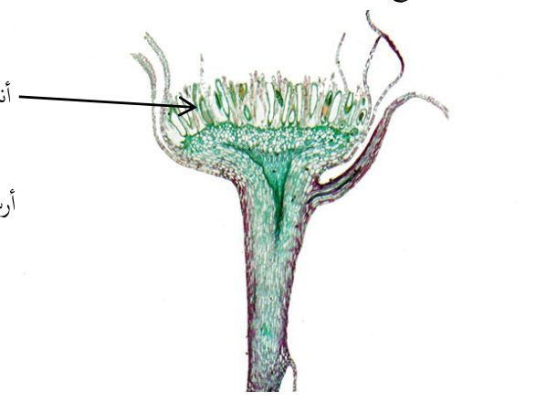
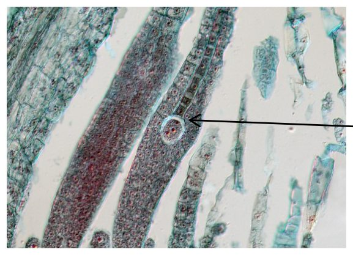
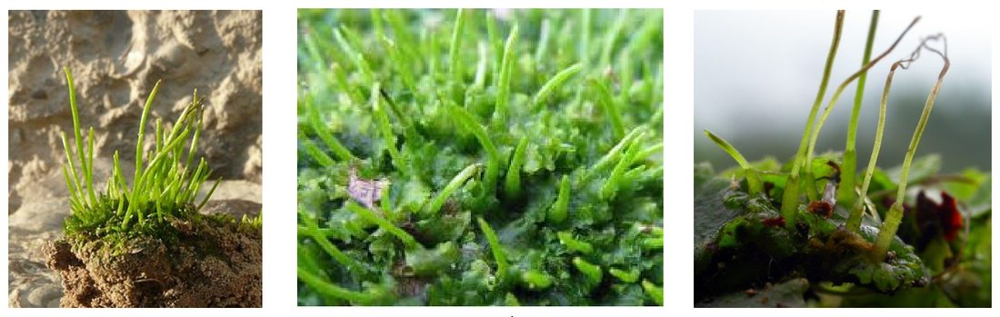
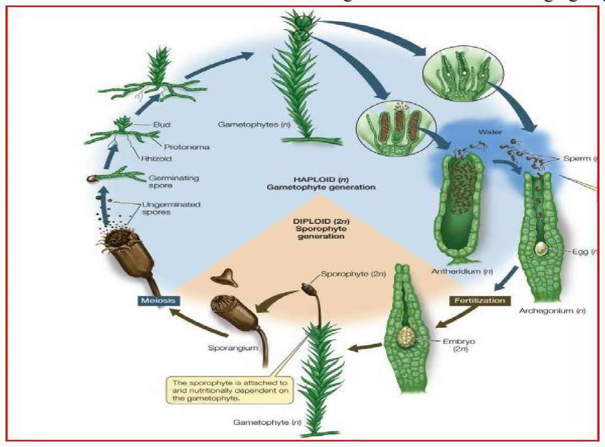
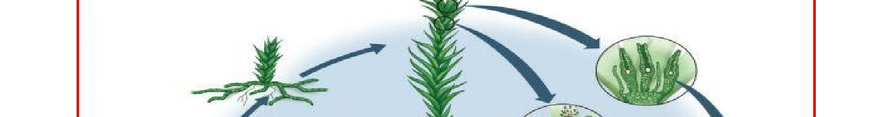
تمتاز بخصائص مميّزة عن الكبدية والخُلمية:
من التقسيم العام للجنينيات إلى الأقسام الأربعة للسرخسيات مع دورات الحياة المصوّرة
تنقسم النباتات الجنينية Embryophytes إلى: نباتات حزازية لا تحتوي على أنسجة ناقلة، ونباتات وعائية Trachéophytes تحتوي أنسجة ناقلة متخصصة هي الخشب واللحاء. وتمتاز النباتات المنتمية إلى هذا القسم بما يلي:
وتضم الوعائية مجموعتين: السرخسيات Ptéridophytes (البوغيات Sporogones — تتكاثر بالأبواغ) والنباتات البذرية Spermatophytes (ظاهريات الإلقاح Phanérogones).
اشتُق اسمها من كلمتين يونانيتين (Pteris: جناح/ريشة وتعني السرخس). عُرفت منذ حوالي 440 مليون سنة؛ وبفضل أشكالها المورفولوجية الضخمة وكانت تشكّل في تلك الحقبة غابات كثيفة تُعتبر من عصر الفحم الحجري. ومقارنة بالحزازيات، تمتلك السرخسيات جهازاً نباتياً أكثر تكيفاً مع الحياة الأرضية، لكنها رغم ذلك لا تستغني عن الماء: فالأفراس (الأمشاج) الذكرية متحركة وسبّاحة بوجود أسواط.
تضم السراخس في الوقت الحالي حوالي 12000 نوع، يكون حوالي 9/10 منها سراخس حقيقية والباقية تتوزع على ثلاث مجموعات بدائية، وتمثل بقايا نباتات متحجرة كانت تعيش سابقاً. وأهم الأماكن التي يتعيّش فيها السرخس: الأماكن الرطبة المضللة (يحتاج الماء لإتمام الإلقاح) خاصة الغابات الاستوائية. تنقسم إلى أربعة أقسام (صفوف):
| القسم | أبرز خصائصه |
|---|---|
| 1. السراخس البدائية Psilotes | تُعتبر أقلها تمايزاً: ريزوم زاحف بأفرع قائمة ثنائية التفرع، بدون جذور (أشباه جذور فقط) وبدون أوراق، والحوافظ البوغية تحمل في نهاية الأفرع — جنسان فقط: Psilotum وTmesipteris |
| 2. برخل الذهب (المساحل) Lycopodes | سيقان زاحفة وقائمة تحمل أوراقاً، لا توجد جذور حقيقية؛ الحوافظ في إبط الأوراق، وتتشكل سيبة بوغية كثيفة الأوراق تحتوي الأفراس في نهاية الفروع |
| 3. بذانة الخيل (ذنب الخيل) Prèles | ريزوم بري عميق يمتد أفقياً مع سيقان قائمة مضلّعة مُسلّمة؛ أوراق حرشفية مختزلة حولية التوضع (غير خضراء اللون عكس السيقان الخضراء)؛ الحوافظ في نهاية الفروع معطية سيبة بوغية |
| 4. السراخس الحقيقية Les vraies Fougères | ريزوم أرضي يخرج منه أوراق كبيرة (Frondes) ذات تيغّر محوري (يُدعى عرق الورقة مقصوص)؛ الامتداد الوعائي من الريزوم إلى نهاية الورقة تام؛ الحوافظ البوغية في الوجه السفلي للأوراق |
مقارنة بالنباتات الحزازية (سيادة مشيجي أحادي على بوغي ثنائي متطفل)، يحدث العكس عند السرخسيات: سيادة الطور البوغي الثنائي الذي يمثل النبات، على الطور المشيجي الأحادي المتمثل في المرشة الأولية الناتجة من نمو الأبواغ المحررة من الطور البوغي.
جنس Psilotum: في المناطق الاستوائية، نباتات برية قائمة تعيش على جذوع الأشجار؛ النبات البوغي بشكل شجيري قصير (~1م) بتركيب بسيط: ساق عبارة عن ريزوم معمور في التربة (ساق ترابية) وجزء هوائي ثنائي التفرع سريع النمو؛ الأوراق حرشفية صغيرة (أوراق أولية)؛ الجزء الأرضي يتكافل مع بعض الفطريات ولا يحتوي إلا أشباه جذور. السيقان بمقطع وعائي بسيط؛ المخاع من نسيج إسكلرونشيمي والنسيج الوعائي بسيط: الخشب من كعبات (تراكيد) ذات تجويف حلزوني أو سومي. تظهر الحوافظ البوغية خارجة من إبط الأوراق الحرشفية، ثلاث حوافظ متحدة في تركيب واحد بداخلها أبواغ متشابهة. النبات المشيجي مختزل قمي اللون يعيش مرتدّاً (وقد يتكافل مع بعض الفطريات)، بشكل بسيط متفرع يُغطي بأشباه جذور، لا يحتوي نسيجاً وعائياً، أحادي المسكن: يحمل الأنثريديات (تظهر أولاً ثم تموت) والأرشيجونات؛ الإلقاح في الماء والمساحبات حلزونية متعددة الأسواط؛ البويضة الملقحة تتطور إلى جنين ينمو معطياً نباتاً بوغياً جديداً.
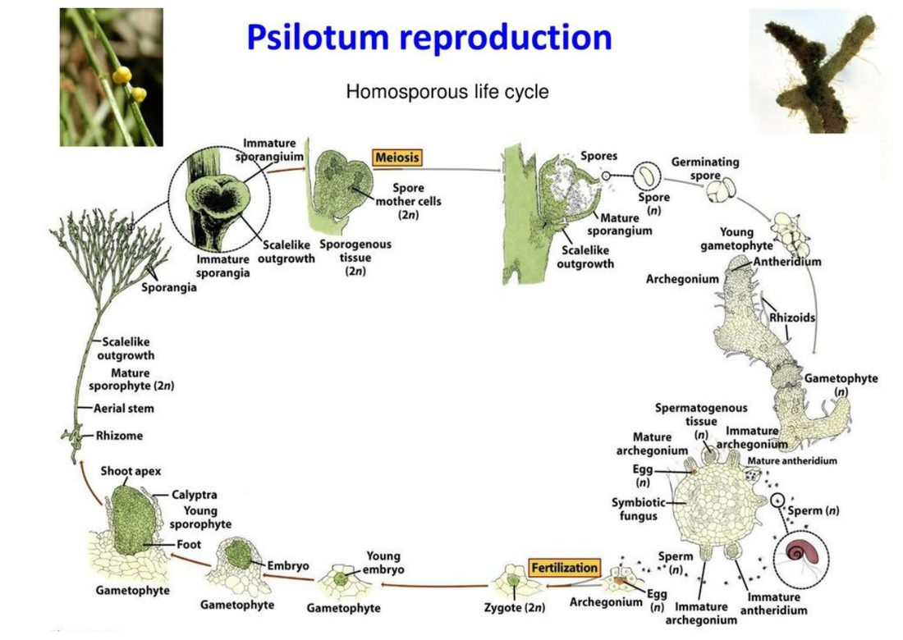
تختلف عن البدائية بوجود أوراق وجذور ذات نسيج وعائي، وتوضّع الحوافظ البوغية على أوراق خاصة تُعرف بالأوراق البوغية sporophylles — مع رتبتين مميزتين حسب وجود اللسانيات (légules) في الأوراق: Lycopodiales (بدون لسانيات: نباتات مثل القدمية) وSelaginellales (المسنّية أي بلسانيات الأوراق).
رتبة Lycopodiales — عائلة Lycopodiaceae — جنس Lycopodium: الطور البوغي ينتج أبواغاً متجانسة تُنقل بعيداً مفترقة ثم تنمو معطية أطواراً مشيجية؛ المشيجي أحادي المسكن (الأنثريديات والأرشيجونات علوية على نفس المرشة). تختلف أنواع النباتات المشيجية وطريقة تغذيتها: بعضها ظاهرة فوق سطح التربة مضيئة للضوء (بصانعات خضراء — ذاتية التغذية)، وبعضها معمور في التربة غير ذاتي التغذية يعيش متطفلاً تكافلياً مع بعض الفطريات (Symbiose).
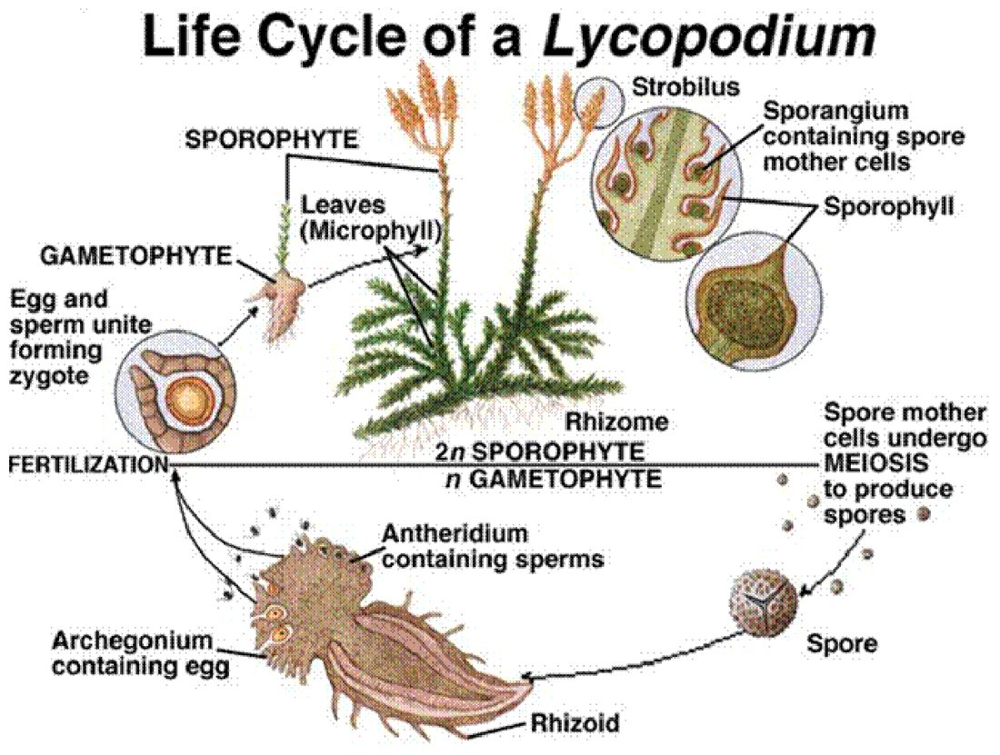
رتبة Selaginellales — عائلة Selaginellaceae — جنس Selaginella (المسنّية): نباتاتها مسنّية الأوراق (وجود لسانيات في الأوراق)، تحمل أوراقاً على سيقان قائمة ثنائية التفرع؛ تتشكل الحوافظ البوغية في نهاية الأفرع معطية سيبة (مخروط) بوغية. الأبواغ متباينة: بواغ صغرى microspores داخل حوافظ صغرى على أوراق بوغية صغرى في قمة السيبة البوغية، وبواغ كبرى megaspores في حوافظ كبرى على أوراق بوغية كبرى في قاعدتها — ومنه نوعان من النباتات المشيجية. النبات البوغي أكثر اختزالاً من المجموعة الأولى: يبدأ إنبات الأبواغ داخل الحوافظ قبل تحررها، ومعظم الغذاء الذي تعلق به معدّ من النبات البوغي. ينتج البوغ الصغير مشيجاً ذكرياً داخل الغلاف البوغي (مرشة مختزلة تتكون من أنثريدية واحدة تعطي أمشاجاً متحركة بالأسواط)، والبوغ الكبير مشيجاً أنثوياً أكبر حجماً تنكشف أرشيجوناته قرب ثلاث حجرات الشق فتلقح بويضاتها بالأمشاج معطية جنيناً فنباتاً بوغياً جديداً.
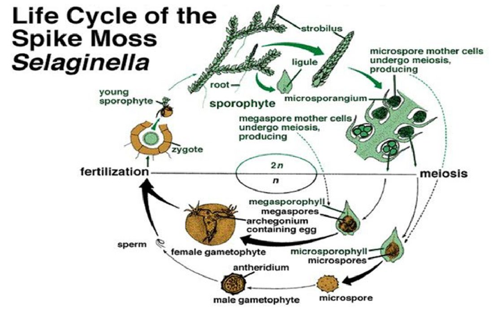
يتبعها جنس واحد فقط حي هو Equisetum (ونوع منقرض Equisetites) — بعض أنواعها «النباتات المفصولة» بسبب الجسم المفصّل. ينتمي Equisetum إلى عائلة Equisetaceae، رتبة Equisetales.
يتراوح انتشارها بين بضع سنتيمترات في المناطق الحارة إلى عدة أمتار في المناطق الاستوائية حيث تكون بعضوية في شكل أشجار سرخسية. الجهاز الخضري: ريزوم غني بالمخرات الغذائية (النشا!)، متفرع، يحمل جذوراً عرضية، وتخرج منه أوراق كبيرة (Frondes). الحوافظ البوغية متجمعة في بثور sores تتوضع على الوجه السفلي للأوراق، نضاضة مغطاة أو غير مغطاة. الساق المورقة تمثل الطور البوغي الثنائي (2n) الذي ينتج أبواغاً أحادية (n) بعد الانقسام الاختزالي؛ الأبواغ متشابهة مورفولوجياً، وعند تحررها وتشتتها تعطي المرشة الأولية (Prothalle): طبقة خلوية خضراء مسطحة قلبية الشكل ببضعة مليمترات، تحمل الأعضاء الذكرية (الأنثريديات بساحباتها لولبية متعددة الأهداب) والأعضاء الأنثوية (الأرشيجونات) — مرشة أحادية المسكن أحادية الصيغة؛ بعد الإلقاح ← بويضة ملقحة تتطور إلى جنين (2n) يتغذى في البداية من المشيجي ثم يكون الأوراق والجذور الأولى فينفصل معطياً طوراً بوغياً جديداً.
ينقسم هذا الصف إلى تحت صنفين حسب الحوافظ البوغية وشكل الأوراق:
جنس Polypodium (رتبة Polypodiales — عائلة Polypodiaceae): نبات من طور بوغي قصير العمر لكن فترة حياته تطول في دورة حياة النبات؛ ساقه عبارة عن ريزوم أرضي غير محدود النمو مغطى بحراشف، يخرج منه جذور عرضية وأوراق مركّبة ريشية متضاعفة (محور يحمل محاور جانبية ثانوية تحمل ريضات). التكاثر ودورة الحياة: خضرياً بتجزؤ الريزوم (يتجدد ويعطي طوراً بوغياً جديداً)، ولاجنسي بالأبواغ التي تتكون على مستوى الطور البوغي في الأوراق السرخسية Frondes: كل ورقة تحمل على الوجه السفلي بثوراً مجموعة بواسطة نضاضة (placenta) على مَشيمة تخرج منها الحوافظ البوغية؛ الحافظة بعنق رفيع، ويحيط بتجويفها الداخلي جدار من صف واحد من الخلايا رقيقة الجدر، مع صف خارجي من الخلايا محمّط — إحاطة غير كاملة يسمى المعوق (annulus) تتغلظ جدرانه بمادة اللّجنين ما عدا الجهة الخارجية، وتنتهي الحافظة بمجموعة من الخلايا المضفوعة (stomium) هي مكان انفتاحها؛ تتكون الأبواغ داخل الحافظة بالانقسام الاختزالي. عند نضج الحافظة تجف فتتفتح بالتوتر فيتمزق جدارها عند الخلايا المضفوعة وينفتح المعوق للخلف بحركة فجائية ثم بدخول الهواء يعود لوضعه الأصلي بحركة سريعة تعمل على انتشار الأبواغ. وعند تحرر الأبواغ ومصادفة الظروف المناسبة: تنمو معطية مرشة أولية خضراء قلبية الشكل (بضعة ملم) منبطحة على الأرض، بأشباه جذور في وجهها السفلي؛ تحمل الأعضاء الذكرية (Anthéride) التي تظهر منذ أولاً قرب منطقة خروج الجذور (خلايا أم للساحبات ← ساحبات ذكرية حلزونية متعددة الأهداب)، وتتشكل الأرشيجونات بالقرب من منطقة الوسادة (الشق) في الوجه السفلي من الطور المشيجي وتحتوي على البويضات. تنتقل المساحبات الذكرية Anthérozoïdes إلى بويضة الأرشيجونة فتلقحها ← بويضة ملقحة ← جنين (قد تُخصب أكثر من أرشيجونة لكن بويضة واحدة فقط تنمو لأنها تفرز هرموناً يثبّط باقي البويضات المخصبة فلا تتطور). يتطور الجنين مبتدئاً بالاعتماد على المشيجي ثم يستقل بتشكيل الأوراق الأولى والجذور الأولى → طور بوغي جديد.
الوحدة الأولى (المدخل) مجانية بالكامل — انضمّي للمشتركين لتكملي باقي مقرر علم النبات التصنيفي 🌱 (والبيولوجيا العامة والجيولوجيا أيضاً بنفس الاشتراك!)